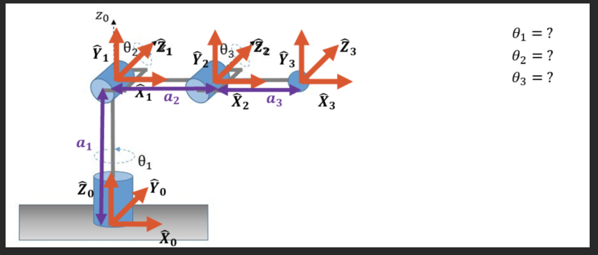
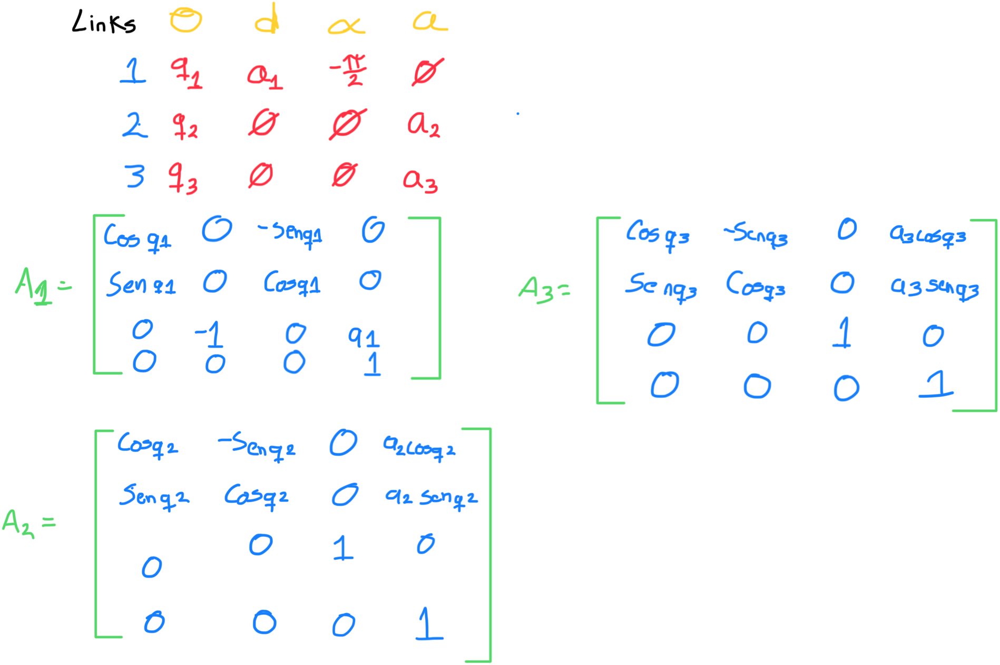
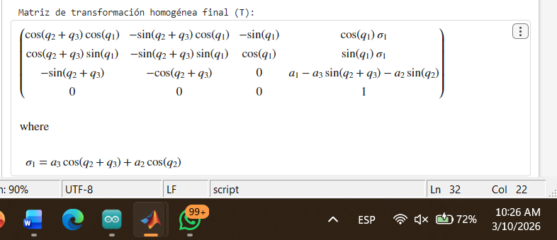
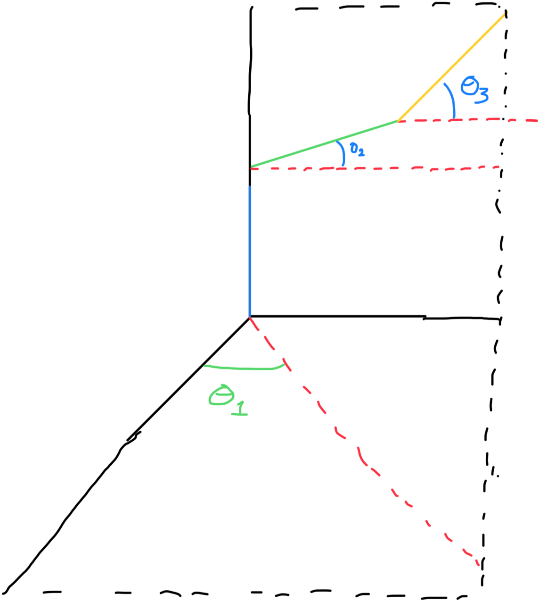
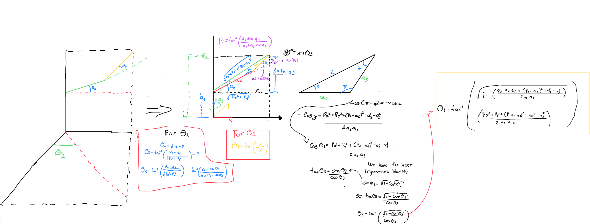
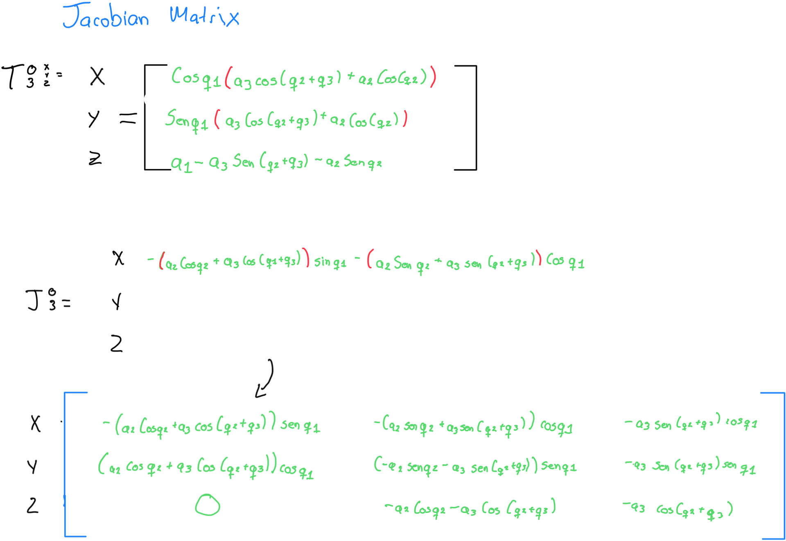

IK and Jacobian
1) Activity Goals
-
Correctly assign coordinate frames to each joint following the DH convention.
-
Identify the four specific parameters for each link.
-
Organize the extractedvalues into a standard DH parameter table to represent the robot's kinematic structure.
-
Get the DH paramaters of each robot.
-
know is the kinematics of each robot.
-
Know how is the movement in each joint of the kuka and ur robot, looking how is the manufacturer sets it to each positive turn.
2) Materials
No materials required
Analysis
- First we have to get the dh paramaters from the next robot:

- We have the next DH table, where we can see all parameters:

- After to do the table, we need the final matrix, for that we can use MatLab for do that, with the next code we can simplify the final matrix:
% 1. Symbolic definitions
syms q1 q2 q3 a1 a2 a3 real
% Matrix A1
A1 = [cos(q1), 0, -sin(q1), 0;
sin(q1), 0, cos(q1), 0;
0, -1, 0, a1;
0, 0, 0, 1];
% Matrix A2
A2 = [cos(q2), -sin(q2), 0, a2*cos(q2);
sin(q2), cos(q2), 0, a2*sin(q2);
0, 0, 1, 0;
0, 0, 0, 1];
% Matrix A3
A3 = [cos(q3), -sin(q3), 0, a3*cos(q3);
sin(q3), cos(q3), 0, a3*sin(q3);
0, 0, 1, 0;
0, 0, 0, 1];
% 3. calculous of the final matrix
T = A1 * A2 * A3;
% 4. to simplify
T_simplificada = simplify(T);
% 5. show the results here
disp('Matriz de transformación homogénea final (T):');
disp(T_simplificada);

Geometric Method
- First we can simplify the robot, for do more easy the analisys for each link:

- next we can analysis from theta 3, is more easy get first the tetha 3, and then we could get theta 2 and theta 1:

Jacobiano
-
Our next steo is to do our jacobiano method, this method says us which move doesnt affect to the all robot.
-
we take in previous steps the final matrix of our DH parameters for do the jacobian matrix:
